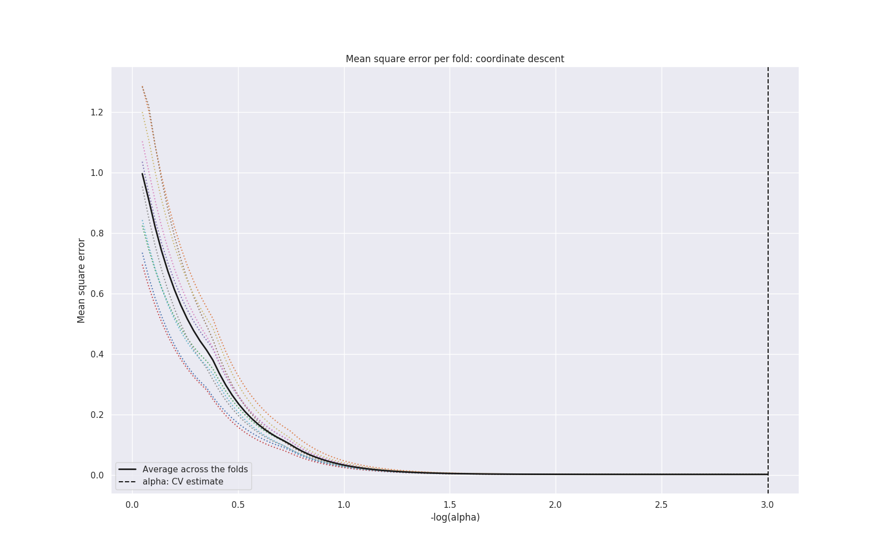
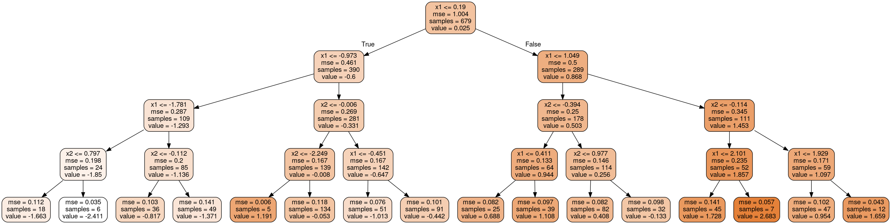

Workflow: Feature importance
Feature importance tries to detemine which
These steps implement data exploration when dataset is a DataFrame (i.e. dataset_type: 'df').
Model-based column permutation
Estimate feature importance based on a model by randomly permuting values on each column.
How it works: Suffle a column and analyze how model performance is degraded. Most important features will make the model perform much worse when shuffled, unimportant features will not affect performance.
Models used (SciKit-Learn, default parameters): - Random Forest - ExtraTrees - GradientBoosting

Model-based drop-column
Estimate feature importance based on a model by dropping a column.
How it works: Drops a single column, re-train and analyze how model performance is degraded (respect to validation dataset). Most important features will make the model perform much worse when dropped, unimportant features will not affect performance
Models used (SciKit-Learn, default parameters): - Random Forest - ExtraTrees - GradientBoosting

SkLearn importance
Use default SciKit-Learn importance estimation method. Models: Random Forest, ExtraTrees, GradientBoosting (default parameters)
Regularization models
Perform a model fir with regularization (using cross-validation), then analyze the model coefficients.
Models used (SciKit-Learn, default parameters): - Lasso - Ridge - Lars (AIC) - Lars (BIC)

Selection
Use a SciKit-Learn SelectFdr or SelectKBest, depending on whether the selection function has p-values or not.
| Selection function | Has p-value | Classification / Regression |
|---|---|---|
| f_regression | True | Regression |
| mutual_info_regression | False | Regression |
| f_classif | True | Classification |
| mutual_info_classif | False | Classification |
| chi^2 | False | Classification |
Recursive Feature Elimination
Use recursive feature elimination (SciKit-Learn RFECV) using several models:
| Model | Classification / Regression |
|---|---|
| Lasso | Regression |
| Ridge | Regression |
| Lars (AIC) | Regression |
| Lars (BIC) | Regression |
| Random Forest | Classification, Regression |
| ExtraTrees | Classification, Regression |
| GradientBoosting | Classification, Regression |
In all cases, Scikit-Learn models with default parameters are used.
Linear model p-value
Calculate p-value based on a linear model (statsmodels.regression.linear_model.OLS).
The null model variables can be set in the config_YAML, parameter linear_pvalue_null_model_variables.
P-values are corrected for multiple testing using False Discovery Rate (FDR).
Logistic regression p-value
Calculate p-value based on a logistic regression model (Wilks theorem) (statsmodels.discrete.discrete_model.Logit).
The null model variables can be set in the config_YAML, parameter logistic_regressions_by_class
P-values are corrected for multiple testing using False Discovery Rate (FDR).
When the classification is non-binary (i.e. multiple classes), the p-values are calculated as one class compared to all others (for each class). Then p-values are FDR adjusted. Significance is assessed on any comparison.
Tree graph
Create a shallow decision tree (default tree_graph_max_depth=4) and show a graph og the tree

Weighted rank
All feature importance algorithm results are combined in a summary table.
Finally the results are ranked according to all methods:
- Model based methods are weighted according to the 'loss functions' from each model (on the validation set), i.e. lower is better. Losses (lower is better) are transformed to weights (higher is better) and corrected to be in the range
[weight_min, weight_max](defalt[1, 10]) - Other methods use a weight of
weight_min(default 1.0) - Ranks from all algorithms are multiplied by the weights to form a weighted rank sum (
rank_sumin the summary table) - The
rank_sumresult is ranked, most important variables are shown first
| variable | importance_permutation_RandomForest | ... | importance_dropcol_RandomForest | ... | ranks_sum | rank_of_ranksum |
|---|---|---|---|---|---|---|
| x1 | 73.424 | ... | 50.154 | ... | 134.99 | 1.0 |
| x2 | 16.635 | ... | 11.455 | ... | 269.99 | 2.0 |
| x3 | 2.723 | ... | 1.856 | ... | 404.98 | 3.0 |
Congig YAML
These are the config_YAML options related to feature importance
dataset_feature_importance:
# Set to 'false' to disable this step
enable: true
# Set to 'false' to disable this step for 'na' dataset (i.e. a dataset of missing data)
enable_na: true
# Enable "Feature Importance using Permutations" (for different models)
is_fip_random_forest: true
is_fip_extra_trees: true
is_fip_gradient_boosting: true
# Regularization methods
# Enable regularization methods (for different models)
is_regularization_lasso: true
is_regularization_ridge: true
is_regularization_lars: true
# Number of Cross-validation in regularization methods
regularization_model_cv: 10
# Enable Recursive Feature Elimination (for different models)
is_rfe_model: true
is_rfe_model_lasso: true
is_rfe_model_ridge: true
is_rfe_model_lars_aic: true
is_rfe_model_lars_bic: true
is_rfe_model_random_forest: true
is_rfe_model_extra_trees: true
is_rfe_model_gradient_boosting: true
rfe_model_cv: 0 # Number of Corss-validations in Recursive Feature Elimination methods
# Enable model selection methods (SelectFdr / SelectKBest)
is_select: true
# Linear regression p-value
is_linear_pvalue: true
# Variables used for setting the null model (always add to linear regression model)
linear_pvalue_null_model_variables: ['x6']
# Tree graph
is_tree_graph: true
tree_graph_max_depth: 4 # Number of layers to show in graph
# Range to use when expanding weights
# Note: Weights are converted to an interval [weight_min, weight_max]
weight_max: 10.0
weight_min: 1.0
# Logistic regression p-value (Wilks)
is_wilks: true
# Variables used for setting the null model
wilks_null_model_variables: ['age', 'sex', 'pc_1', 'pc_2', 'pc_3', 'pc_4']